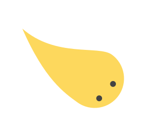

關於我
曾任教科書編輯，具專案管理、內容編排與客服的經驗，熟悉QGIS、Illustrator等軟體。
2022/6從勞動部「互動式前端網頁設計與開發實務班」結訓，希望未來能將出版經驗活用於網頁設計上。

曾任教科書編輯，具專案管理、內容編排與客服的經驗，熟悉QGIS、Illustrator等軟體。
2022/6從勞動部「互動式前端網頁設計與開發實務班」結訓，希望未來能將出版經驗活用於網頁設計上。